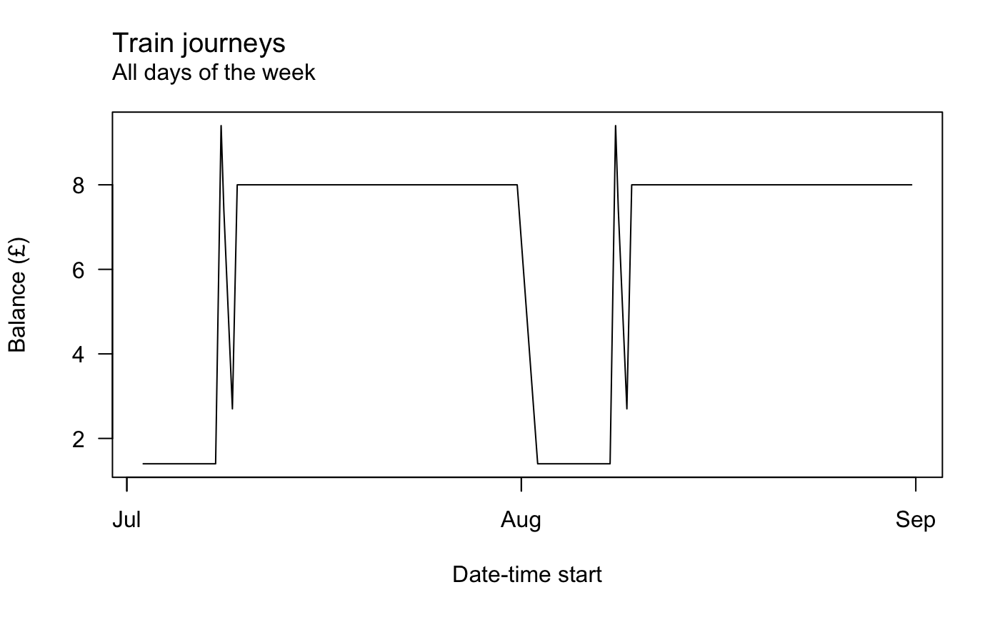
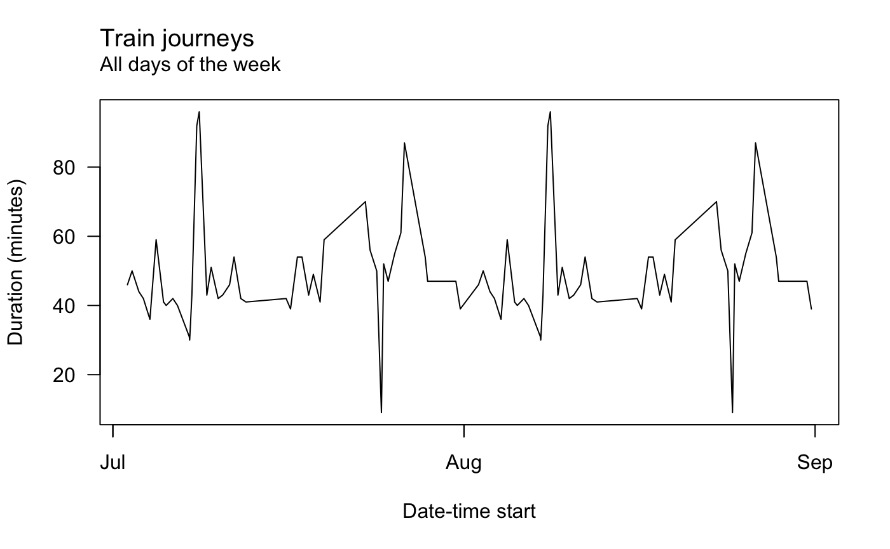

You can use the {oystr} package to process Oyster card journey data in CSV files provided by Transport for London (TfL).
Provide a file path to oy_read() that contains the CSVs, then use data_clean() to prepare the data and extract new features ready for further processing and summarisation.
Transport for London (TfL) is responsible for the majority of the transport network in the UK’s capital. Transport options include overground and underground trains, buses, trams and riverboats.
TfL operates the Oyster card system on its network. You can charge the card with funds and get access to the network by tapping in your card on a special reader.
Your card has a unique number and this is recorded each time you ‘tap in’ and ‘tap out’ of the network. TfL stores this data for consumption by users for eight weeks. You can view your history on the TfL website or you can be sent a monthly digest by email.
In both cases you can collect the data as a CSV file. This is in more of a human-readable form than machine-readable, which can make it difficult to perform further processing from a programmatic perspective.
TfL provide the data in a consistent format. Here are the first few rows from an anonymised example where the locations and services have been replaced.
X X.1 X.2 X.3 X.4 X.5 X.6
1 Date Start Time End Time Journey/Action Charge Credit Balance
2 31-Jul-2018 16:11 16:50 Station A to Station B 0 <NA> 8
3 31-Jul-2018 06:47 07:34 Station B to Station A 0 <NA> 8
4 28-Jul-2018 18:57 19:44 Station C to Station R 0 <NA> 8
5 28-Jul-2018 13:49 14:43 Station R to Station L 0 <NA> 8
6 26-Jul-2018 17:51 19:18 Station D to Station R 0 <NA> 8
X.7
1 Note
2 <NA>
3 <NA>
4 <NA>
5 <NA>
6 <NA>The resulting data frame has some problems. For example:
Date is not in date-time format, for example)The aim of the {oystr} package is to help address these issues and more.
The oy_read() function reads and combines multiple CSV files of Oyster data. The function takes one argument: a string that is the path to a folder containing your Oyster data files.
The names of the files don’t matter, but the structure of each of them must be in the format provided by TfL.
For example, the file path in the example below leads to a folder containing four files: two are CSVs containing monthly Oyster data in the format supplied by TfL (july.csv and august.csv) and the other two are a CSV and a text file that don’t contain Oyster data (not_oyster.csv and not_oyster.txt).
[1] "august.csv" "july.csv" "not_oyster.csv" "not_oyster.txt"So we need to read the two CSVs of Oyster data and ignore the others. The {oystr} package can help you. You can install it from GitHub and then load it.
# Install the {remotes} package to help install {oystr}
install.packages("remotes")
remotes::install_github("matt-dray/oystr")
# Load the package
library(oystr)The functions of the {oystr} package are now available to you.
Use the oy_read() function to read the data sets. To the ‘path’ argument provide a file path to a folder containing your files. Here I’ve used the filepath created in teh sectio above.
Warning in oy_read("../inst/extdata/"): 1 CSV file wasn't in the expected format
and was discarded.This gave a warning for one CSV file that was in the wrong format – the function identified that it didn’t contain Oyster data. The text file was ignored.
Let’s take a look at the structure of the data.
str(data_raw)
'data.frame': 102 obs. of 8 variables:
$ Date : chr "31-Aug-2018" "31-Aug-2018" "28-Aug-2018" "28-Aug-2018" ...
$ Start.Time : chr "16:11" "06:47" "18:57" "13:49" ...
$ End.Time : chr "16:50" "07:34" "19:44" "14:43" ...
$ Journey.Action: chr "Station A to Station B" "Station B to Station A" "Station C to Station R" "Station R to Station L" ...
$ Charge : chr "0" "0" "0" "0" ...
$ Credit : chr "NA" "NA" "NA" "NA" ...
$ Balance : num 8 8 8 8 8 8 8 8 8 8 ...
$ Note : chr "NA" "NA" "NA" "NA" ...The output data frame contains rows of data from both CSV files. We can tell because it has data from both months of the input data frames (July and August in this example).
There’s still a number of problems after the data is read in and the blank first row is removed. For example:
Journey.Action columnYou can clean up the formatting and engineer new features with oy_clean().
# Clean the output from oy_read()
data_clean <- oy_clean(data_raw)
# See the data frame structure
str(data_clean)
'data.frame': 102 obs. of 13 variables:
$ datetime_start : POSIXct, format: "2018-07-02 06:50:00" "2018-07-02 16:41:00" ...
$ datetime_end : POSIXct, format: "2018-07-02 07:36:00" "2018-07-02 17:31:00" ...
$ weekday_start : Ord.factor w/ 7 levels "Monday"<"Tuesday"<..: 1 1 2 2 3 3 4 4 5 5 ...
$ journey_duration: 'difftime' num 46 50 44 42 ...
..- attr(*, "units")= chr "mins"
$ mode : chr "Train" "Train" "Train" "Train" ...
$ station_start : chr "Station B" "Station E" "Station B" "Station A" ...
$ station_end : chr "Station A" "Station B" "Station A" "Station B" ...
$ bus_route : chr NA NA NA NA ...
$ payment : chr NA NA NA NA ...
$ charge : chr "0" "0" "0" "0" ...
$ credit : chr "NA" "NA" "NA" "NA" ...
$ balance : num 1.4 1.4 1.4 1.4 1.4 1.4 1.4 1.4 1.4 1.4 ...
$ note : chr "NA" "NA" "NA" "NA" ...So what did oy_clean() do? You can see there are some new and altered columns:
The data are now in a suitable shape for further processing, such as summarisation and visualisation.
For now, you can summarise the data in two ways: as a list of summary statistcis or as a plot. These functions are underdeveloped while I wait for more information about the possible formats of data from the Journey/Action column.
You can use the oy_summary() function to crate a list where each element is some statistic. By default, the function works for train journeys.
oy_summary(data_clean)
$count_journeys
[1] 94
$stations_popular
Station Frequency
2 Station B 74
1 Station A 50
5 Station E 6
9 Station I 6
17 Station R 6
3 Station C 4
4 Station D 4
6 Station F 4
7 Station G 4
8 Station H 4
10 Station J 2
11 Station K 2
12 Station L 2
13 Station M 2
14 Station N 2
15 Station O 2
16 Station P 2
$stations_matrix
Station A Station B Station C Station D Station F Station G
Station A 0 20 0 0 0 0
Station B 28 0 2 2 0 2
Station C 0 0 0 0 0 0
Station D 0 0 0 0 0 0
Station E 0 6 0 0 0 0
Station F 0 0 0 0 0 0
Station G 0 0 0 0 2 0
Station H 0 2 0 0 0 0
Station I 0 4 0 0 0 0
Station J 0 0 0 0 0 0
Station K 0 2 0 0 0 0
Station R 0 0 0 0 0 0
Station H Station I Station L Station M Station N Station O
Station A 0 0 0 0 0 0
Station B 2 2 0 0 0 2
Station C 0 0 0 0 0 0
Station D 0 0 0 0 0 0
Station E 0 0 0 0 0 0
Station F 0 0 0 2 0 0
Station G 0 0 0 0 0 0
Station H 0 0 0 0 0 0
Station I 0 0 0 0 0 0
Station J 0 0 0 0 2 0
Station K 0 0 0 0 0 0
Station R 0 0 2 0 0 0
Station P Station R
Station A 2 0
Station B 0 0
Station C 0 2
Station D 0 2
Station E 0 0
Station F 0 0
Station G 0 0
Station H 0 0
Station I 0 0
Station J 0 0
Station K 0 0
Station R 0 0
$duration_total
Time difference of 4298 mins
$day_popular
Day Frequency
2 Tuesday 16
4 Thursday 16
5 Friday 13
6 Saturday 13
1 Monday 10
3 Wednesday 10
7 Sunday 10You can also specify bus journeys.
oy_summary(data_clean, mode = "Bus")
$count_journeys
[1] 14
$routes_popular
[1] Freq
<0 rows> (or 0-length row.names)See ?oy_summary for details.
There is limited suport for plotting too. You can call oy_lineplot() for a very simple lineplot of some continuous variables over time. For ecample, here’s the balance remaining on the card over time.

And here’s journey duration with weekends removed.
